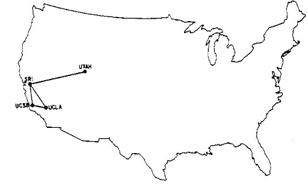
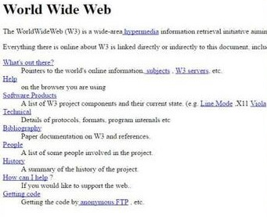

A internet é algo tão presente no nosso dia a dia que é difícil imaginar o mundo sem ela. Mas você sabia que, na verdade, ela tem menos de 60 anos? Vamos dar uma olhada em como tudo começou e em como essa rede global evoluiu ao longo do tempo!
As Primeiras Ideias (Anos 1960)
A história da internet começa nos anos 1960, no auge da Guerra Fria. A ideia inicial não era criar a internet como a conhecemos hoje, mas sim desenvolver uma forma de comunicação entre computadores que resistisse a ataques, como uma possível destruição da infraestrutura de comunicações dos Estados Unidos em caso de guerra. Foi assim que nasceu o ARPANET, um projeto do Departamento de Defesa dos EUA, criado em 1969.
O objetivo era conectar universidades e centros de pesquisa para compartilhar informações de forma eficiente. As primeiras quatro instituições conectadas foram a UCLA, o Stanford Research Institute, a Universidade de Utah e a Universidade da Califórnia em Santa Bárbara.
A Evolução da ARPANET (Anos 1970)
Nos anos 70, a ARPANET continuou a se expandir, e a tecnologia foi melhorada. Nesse período, dois nomes se destacaram: Vinton Cerf e Robert Kahn, que em 1974 criaram o protocolo TCP/IP. Este protocolo permitiu a comunicação entre diferentes redes de computadores, facilitando o envio e recebimento de informações.
Vinton Cerf / Robert Kahn
Essa inovação foi essencial para transformar a ARPANET em algo maior: a internet! Esse conjunto de regras (o TCP/IP) ainda é a base da comunicação entre computadores até hoje.
O Nascimento da World Wide Web (Anos 1980 e 1990)
Se a ARPANET era a "semente", a World Wide Web (WWW) foi o que realmente popularizou a internet como a conhecemos. Em 1989, Tim Berners-Lee, um cientista britânico, desenvolveu a ideia de criar uma rede de documentos interligados que pudessem ser acessados por qualquer pessoa, em qualquer lugar. Assim, em 1991, a primeira página da web foi colocada no ar.
Clique Aqui Para Acessar o Site.
A WWW trouxe uma maneira fácil e intuitiva de acessar a internet, utilizando hiperlinks para navegar entre páginas. Antes disso, a internet era restrita a cientistas e militares. Agora, qualquer pessoa com um computador e uma conexão poderia acessá-la.
A Explosão da Internet (Anos 1990)
Os anos 90 foram o momento em que a internet começou a se expandir rapidamente, especialmente com o lançamento de navegadores como o Mosaic (1993) e o Netscape Navigator (1994). Esses navegadores permitiram que as pessoas acessassem sites de uma maneira visual, com imagens, textos formatados e gráficos.

Exemplo do Mosaic
Durante essa década, empresas como a Yahoo!, Amazon e Google surgiram, moldando a maneira como usamos a internet. A rede mundial de computadores começou a conectar não apenas universidades, mas também empresas e lares ao redor do mundo.
A Revolução das Redes Sociais e do Streaming (Anos 2000 e 2010)
Nos anos 2000, a internet passou por outra grande transformação com a chegada das redes sociais. O surgimento do Facebook (2004), do YouTube (2005) e do Twitter (2006) mudou a forma como nos conectamos e interagimos uns com os outros. A internet não era mais apenas um lugar para acessar informações, mas também para compartilhar experiências e criar comunidades.
Além disso, os serviços de streaming, como o Netflix e o Spotify, mudaram a maneira como consumimos entretenimento. A internet deixou de ser apenas uma ferramenta de pesquisa para se tornar a principal plataforma de mídia, entretenimento e socialização.
A Era Móvel e o Futuro da Internet (Anos 2010 em diante)
Com a popularização dos smartphones e da internet móvel, a rede ficou ainda mais acessível. Hoje, quase todo mundo carrega a internet no bolso, com acesso instantâneo a informações, compras, entretenimento e redes sociais a qualquer hora e lugar.
O futuro da internet está nas tecnologias emergentes, como a inteligência artificial (IA), a realidade aumentada (AR), a Internet das Coisas (IoT) e a 5G. Esses avanços prometem uma internet ainda mais integrada, rápida e personalizada, onde praticamente tudo poderá estar conectado e interagir com o usuário.